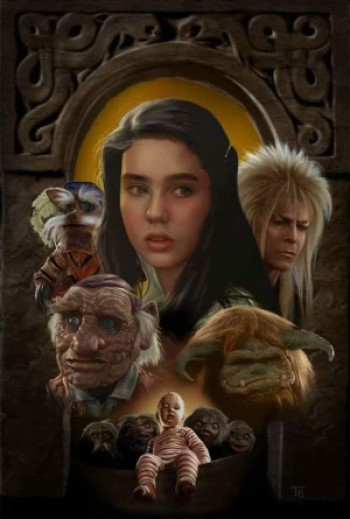
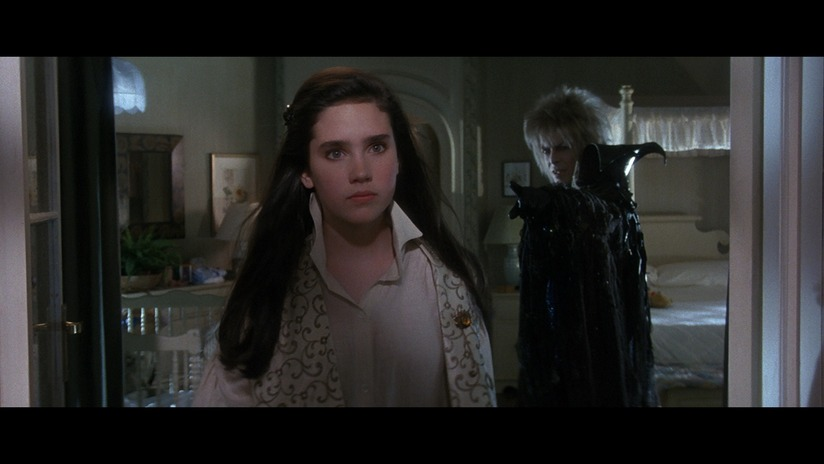

Elige tu propia aventura en el Laberinto
Eres una adolescente con una imaginación desbordante. Una noche, tu padre y tu madrastra se preparan para salir a una cena. Para ello, debes quedarte a cargo de tu medio hermano Toby para cuidarlo. Enfadada por tener que lidiar con el pequeño de un año, quien no deja de llorar, en un arrebato le pides (casi inadvertidamente) al rey de los duendes, llamado Jareth —un personaje de tu libro de fantasía favorito llamado Laberinto—, que se lleve consigo a tu hermano Toby — diciendo las palabras:
"Ojalá viniesen los duendes y te llevasen... Ahora mismo".
Tu deseo se cumplió, ya que el Rey Jareth se muestra ante ti diciéndote que:
- te olvides de Toby y continues con tu vida
- para recuperar a tu hermano cuentas con 13 horas en cuyo transcurso debes resolver su laberinto y llegar hasta su castillo, si es que quieres evitar que Toby se convierta en un duende para siempre.
¿Qué decides hacer?
